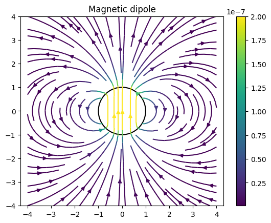

Dipole fields
This example showcases how to calculate and visualize magnetic fields generated by magnetic dipoles. In FusionSC, the dipoles are specified with a finite radius. The magnetic field is calculated as the field of a magnetized sphere of the given radius and total moment (which, outside the sphere, is identical to the magnetic dipole field).
import matplotlib.pyplot as plt
import numpy as np
# Calculate and plot the field of a set of magnetized spheres
# Takes as input tuples of (x, y, r)
def plotSpheres(spheres):
for x, y, r, mul in spheres:
angles = np.radians(np.linspace(0, 360, 360))
xPlot = r * np.cos(angles) + x
yPlot = r * np.sin(angles) + y
plt.plot(xPlot, yPlot, color = 'black')
def sphereField(spheres, moment):
from fusionsc.magnetics import MagneticConfig
x, y, r, mul = zip(*spheres)
zeros = 0 * x
xyz = [x, y, 0 * np.asarray(x)]
moments = np.asarray([moment] * len(x)) * np.asarray(mul)[:, None]
moments = moments.T
return MagneticConfig.fromDipoles(xyz, moments, r)
def plotFields(spheres, moment, w, n = 100, **kwargs):
ax = np.linspace(-w, w, n)
x, y = np.meshgrid(
ax,
ax
)
z = 0 * x
field = sphereField(spheres, moment)
Bx, By, Bz = field.evaluateXyz([x, y, z])
c = np.sqrt(Bx**2 + By**2)
plt.streamplot(ax, ax, Bx, By, color = c, **kwargs)
plt.colorbar()
plt.axis('equal')
plt.xlim(-w, w)
plt.ylim(-w, w)
def plotAll(spheres, moment, w, n = 40, **kwargs):
plotSpheres(spheres)
plotFields(spheres, moment, w, n, **kwargs)
plt.title("Magnetic dipole")
spheres = [
[0,0,1,1]
]
moment = (0, 1, 0)
plotAll(
spheres,
moment,
4
)

plt.title("Dipole spheres of different sizes")
spheres = [
[-2,-2,1,1],
[-2, 2,1,1],
[2,-2,0.5,1],
[2,2,0.5,1],
]
moment = (0, 1, 0)
plotAll(
spheres,
moment,
4,
n = 100
)
plt.title("Magnetic quadrupole")
spheres = [
[-2,0,1,1],
[2,0,1,-1],
]
moment = (0, 1, 0)
plotAll(
spheres,
moment,
4,
n = 100
)